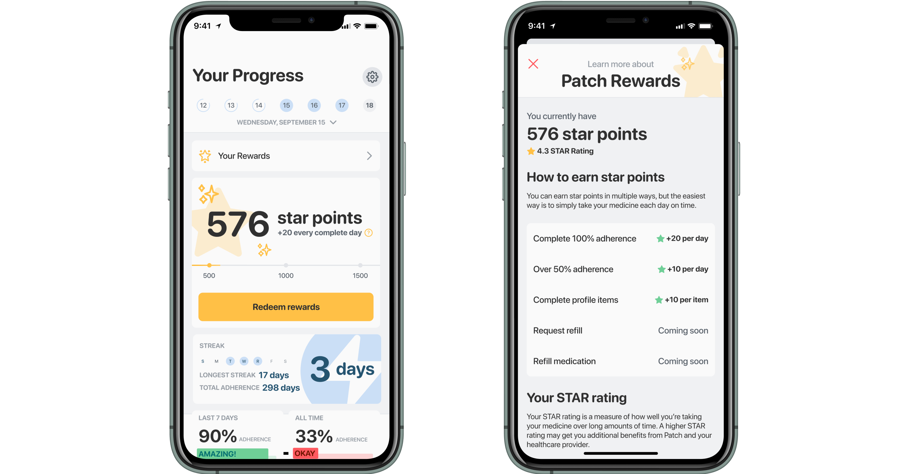
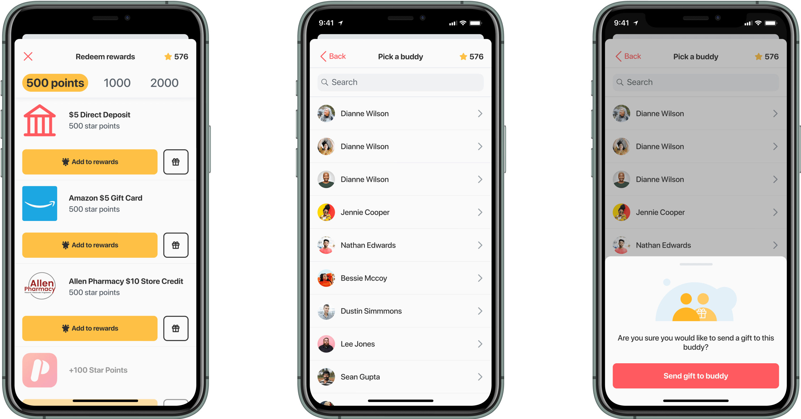

Designing core user experience, incentives, refill, and chat features to reward users for high medication adherence.
Product Designer
Andrew Aertker, Co-founder
Gavin Buchanan, Co-founder
Michael Bryce, Software Engineer
Nathan Dullea, Software Engineer
April 2020 to May 2020 | Oct 2020 to Nov 2020
PatchRx is a healthcare-technology company that helps patients take the right medication at the right time, and works with pharmacies to track daily adherence and identify trends in patience behavior.
Patients use the PatchCap – a small, puck-like device that fits underneath your medicine bottle cap and automatically tracks medication as you take it – and can earn rewards for good adherence and connect with contacts to help each other stay healthy.
A common occurance for pharmacists is a returning patient who realizes they're out of medication and needs a refill. However, they were supposed to come in for a refill 2 weeks earlier. In many cases, forgetting to take medication can be life-threatening. Doctors and pharmacies know this and find it difficult to keep track of their patients' adherences over time.
Reminder apps are a great way for patients to keep track of their medications but don't always work and leave healthcare providers in the dark about patient behavior. Patients want to take their medication on time so they can stay healthy, but they can't because:
We researched several features to help keep users accountable to taking their medication including:
We wanted to prioritize the feature with the highest value as a relatively new app with growing user base. Rewards inherently made the most sense since users would be automatically enrolled and the value of the feature would increase with time. Connecting with contacts would be the most attractive if we already had many connected users but proves less useful when there isn't a critical mass. Virtual chat would also help to keep users accountable but seemed more optional and intrusive relative to the rewards feature.
While rewards systems are great at developing brand loyalty and gamifying typically heavy interactions, we wanted to develop a system that would encourage solving the accountability problem rather than just giving away free stuff.
In our first iteration we focused on making sure that reward points were properly tied to adherence. Additionally, pharmacies found it useful to have a standardized rating system to incentivize patients with better rewards.
Going back to our initial ideas, we wanted to encourage users to also build out a network by spreading the word among friends. A simple gift-giving feature would create some reason for a friend of a user to join as well.
Lots of internal discussions and process are left out of this case study out of courtesy. PatchRx is actively partnering with pharmacies around the country – reach out for more info!